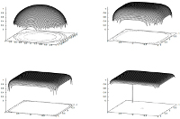

I. La tension
La tension en tant que concept général pourrait être décrite
(grossièrement, nous y reviendrons) comme une "force" endogène, interne, à distinguer en cela de la
pression que l'on définit plutôt par l'action d'un corps sur un autre corps.
Cela peut surprendre qu'un phénomène dit superficiel dépende de causes
internes, profondes, et pourtant c'est semble-t-il le cas.
Cette force voudrait en quelque sorte séparer les éléments constitutifs
d'une substance (voir Le tendu in
Les liants font les procédés, voir aussi Tension in Le
petit Robert, acception 3). Mais si le contexte global n'impliquait pas
quelques contraintes, cette force interne existerait-elle ? Comme l'indique un passage des
Dialogues de Dotapea consacré aux surfactants, cette question est presque
philosophique.
Il est important, à ce niveau de la définition, de lire
<<< ce lien >>>.
II. La tension superficielle et son contexte
La tension superficielle serait la même "force interne" exercée à la surface d'un corps. Elle concerne essentiellement les fluides.
Elle serait responsable de la tendance de ceux-ci à s'arrondir et à former
des gouttes, la sphère étant est la forme qui oppose le moins de surface
pour un volume donné. Nous allons voir pourquoi cette question de surface
est importante.
Mais avant de poursuivre, précisons le contexte. Nous évoquons un
"système" (un ensemble) constitué de plusieurs éléments, non d'un seul car
par exemple, les liquides exposés au vide se dissocient. Pas de flaque d'eau
sur la lune. Pas de "surface de l'air" non plus en haut de l'atmosphère.
Mais nous reviendrons sur ces points un peu plus loin.
Un tel "système" peut être par exemple les océans et l'atmosphère ou une
nappe d'huile sur une nappe d'eau. Sachant que pour rendre compte de tout le
système, il faudrait y inclure les autres éléments participant à son propre
confinement : les masses rocheuses de la
planète pour le système "océans et atmosphère", un contenant quelconque pour
l'eau et l'huile, et les gaz exerçant une pression au-dessus.
Ce n'est pas anecdotique : si les liquides et les gaz ont besoin de
confinement pour former une surface, les solides ont une surface même
lorsqu'ils ne sont pas confinés [voir note 1]. Entendons ici par surface "étendue plane",
l'une des définitions classiques de ce mot. Cette différence que le vide
semblerait révéler pourrait être liée aux types de liaisons électroniques associés à
chaque phase de la matière (lire
l'article consacré aux liaisons).
En complément, on lira ci-dessous l'annexe consacrée à la
tension de vapeur. Lien.
III. Les facettes d'une force conceptuelle
Revenons maintenant à ce que nous avons nommé par facilité une "force
interne" induisant une séparation et conséquemment, la délimitation quasi
frontalière qu'est une surface, ceci afin de mieux comprendre la
définition de la tension donnée ci-dessus.
* Globalement, il existe des éléments
"incompatibles". Ils sont soit en phases
différentes, soit ayant une répartition de charges différentes (polaires
ou apolaires). Cette force n'a rien de mystérieux. Elle n'existe pas à
proprement parler. Il n'y a pas véritablement "d'énergie de surface" (le
terme est parfois employé) à considérer comme indépendante des interactions
fondamentales. C'est une abstraction. Il existe par contre une somme
d'énergies, mécaniques (pression, quelle qu'elle soit) et/ou
électromagnétiques, que l'on peut nommer tension et qui a essentiellement
pour résultante une séparation de fait. La tension est donc conceptuellement
et globalement "ce qui tend vers une séparation".
* Localement, cette tension donne lieu à une
surface séparant les éléments dits "incompatibles".
* Encore plus localement, à l'échelle des
liaisons électroniques, Jean-Louis
écrit : « les molécules de la surface sont à moitié découvertes ; au lieu
d'avoir une coquille de copines, elle n'en ont qu'une demi, l'autre moitié
de leur univers étant fait d'air ou d'autre chose. Donc elles n'aiment pas.
Elles ont envie de rentrer dans la masse, de se recouvrir de molécules
identiques. Donc, littéralement, elles "tirent sur la surface" pour comme
s'en recouvrir. D'où la tension de la surface. »
Voilà comment une "force endogène" mène à la création d'une forme, en
l'occurrence la sphère.
IV. Bulles, mousses et émulsions
Un produit dit "surfactant" tendrait à "réduire la tension de frontière"
(les guillemets ici ne sont pas fortuits) à l'aide de produits capables d'interfacer les milieux
en présence. Il s'agit d'amphiphiles.
Quel résultat cela donne-t-il ? Des étalements et des flous comme
indiqué ailleurs sur ce site au sujet du "tendu", mais
aussi bien souvent, des bulles. Des bulles
aqueuses dans une matière huileuse, ou l'inverse - ce sont les émulsions
grasses et maigres bien utiles par exemple lorsqu'il faut mouiller certains
pigments (lien) -, ou bien des bulles
d'air piégées par des liquides - cela donne des mousses - qui peuvent se
solidifier plus ou moins durablement. Ces "bulles" peuvent avoir toutes les
tailles et les amphiphiles surfactants peuvent être en théorie de toutes
natures.
Là, effectivement, on rejoint un domaine quasi philosophique ou a
minima lexicographique : peut-on aller jusqu'à affirmer qu'un bateau est un surfactant ? Non,
tout au plus peut-on dire pour introduire une note de fantaisie que c'est un
amphiphile au sens purement étymologique, "qui aime les deux", en l'occurrence l'air et
l'eau.
V. Ce que le confinement engendre
Sur la base de quelques interactions simples, se construisent des
processus aboutissant aussi, par des réponses réelles à des contraintes
réelles comme le confinement, à d'autres formes que la sphère. Ainsi, en
2011, les travaux de Felipe J. Llanes-Estrada et Gaspar Moreno-Navarro (Complutense
University of Madrid) concluent à l'existence de neutrons cubiques - oui,
cubiques - dans les pulsars lourds comme PSR J1614-2230.
Lien vers les
archives arXiv de la bibliothèque de l'université Cornell. En deux mots,
dans un volume donné on entasse plus de briques que d'oeufs. Une contrainte
- en l'occurrence un confinement colossal - façonne un matériau réel, pas
toujours de la même manière : ici en sphère, là en cubes, parce que les
contextes diffèrent.

En lien sur l'image,
une recherche Google
sur l'argument "neutrons cubiques"
<<< Annexes >>>
I. La tension de vapeur
(en complément aux Dialogues de Dotapea)
« Tous les corps ont ce qui s'appelle une "tension de vapeur", ça
caractérise en gros leur facilité à s'évaporer. L'éther a une forte tension
de vapeur, l'huile d'olive beaucoup moins. Les solides ont aussi une tension
de vapeur. Au sens strict, un morceau de métal peut s'évaporer lentement.
C'est évidemment fonction de la température et de la pression. Si tu
chauffes de l'eau, elle bout, i.e. elle s'évapore d'avantage. Si tu chauffes
un morceau de fer tu formes de la vapeur de fer, et si tu fais ça sous vide
tu évapores littéralement le métal qui se recondense sur les surfaces
froides environnantes. L'évaporation des métaux est très utilisée dans
l'industrie, notamment la microélectronique. »
Jean-Louis
II.
Autres
La tensioactivité se mesure à l'aide
d'un appareil, le tensiomètre.
Un liquide dit tensioactif aurait tendance à
s'étaler, ce qui pourrait sensiblement correspondre à la définition du terme
"tendu" utilisé en arts plastiques et décoratifs.
Lire absolument le chapitre
XXII, Le mouillage pigmentaire, en particulier
ce passage.
Lire aussi passage in Les dialogues
de Dotapea, chap. I, A propos des liants
______
[1] Sur ce point,
quelques précisions.
Un confinement lié au vide est indétectable à notre échelle.
Même si l'on admet qu'il existe une "énergie du vide", celle-ci porte sur
des échelles si gigantesques qu'il a fallu attendre le prix Nobel de
physique de 2011 (Perlmutter, Schmitt, Riess, lien
vers une recherche Google) pour que les observations confirment l'hypothèse de son
existence au demeurant peu envisagée jusqu'alors. Par ailleurs, il n'est pas certain que l'on puisse parler de
confinement étant donné qu'il s'agit d'un phénomène impliquant l'univers
entier. Confinement ou expansion ?
A une échelle plus humble, une planète en
formation, encore en fusion, pourrait avoir une surface avant d'avoir
terminé son dégazage. Ce n'est pas constaté directement bien sûr, mais ce
n'est pas du tout à exclure dans le principe. Néanmoins, il lui faut une certaine masse
(et densité) pour cela, c'est-à-dire une
autre forme de confinement, par la gravitation. Une masse trop petite donne,
on le sait bien (rappel photo ci-dessous), des corps
irréguliers.
Eros, Gaspra et Tempel 1
Image Nasa - "You may
use NASA imagery, video and audio material
for educational or
informational purposes,
including photo collections, textbooks, public
exhibits and Internet Web pages."
Pour eux, s'il y a eu un phénomène de
tensioactivité, menant par exemple à un dégazage, ce qui
est fort possible, c'est à une échelle faible ou sur une durée
courte.
Une planète trop peu dense vers l'extérieur ne donne pas non plus de
surface, du moins à ce que l'on croit savoir. En théorie, il n'y a aucune
véritable surface océanique sur les planètes géantes Jupiter, Saturne,
Uranus et Neptune. Les matériaux (hydrogène, hélium, méthane, eau, ammoniac,
etc.) sont trop légers et, sous pression et température faibles, trop
proches de leurs points singuliers.
A vérifier cependant.
La sonde Juno (visiter
le remarquable site officiel), lancée en août 2011 et devant arriver
près de Jupiter en 2016, devrait apporter des informations très attendues
après la chute de la sonde atmosphérique de la mission Galileo qui, en
décembre 1995, n'a manqué que de quelques kilomètres l'altitude nécessaire
pour confirmer la prévision. Juno devrait également nous renseigner sur l'existence supposée d'un noyau doté d'une surface solide
constituée d'hydrogène métallique, autre rareté de la nature associée cette
fois à un confinement considérable.
A lire dans la continuité de cette
note, l'annexe I de cet article, consacrée à la tension de vapeur.
Cliquer ici.
Pour revenir dans le corps du texte,
cliquer sur le bouton "Précédent" de votre navigateur.
Retour
début de page